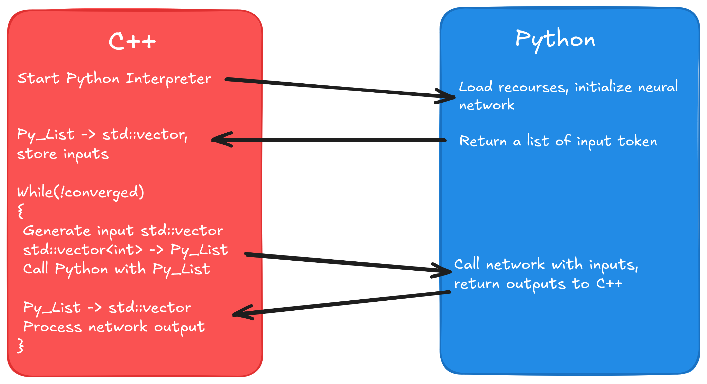
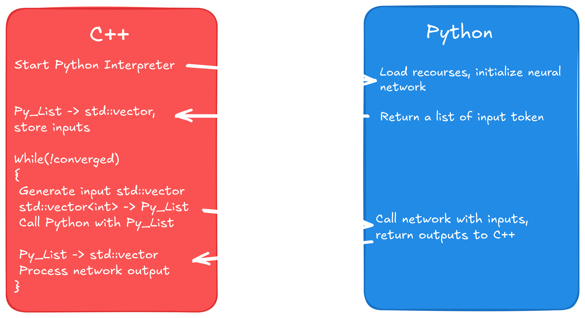
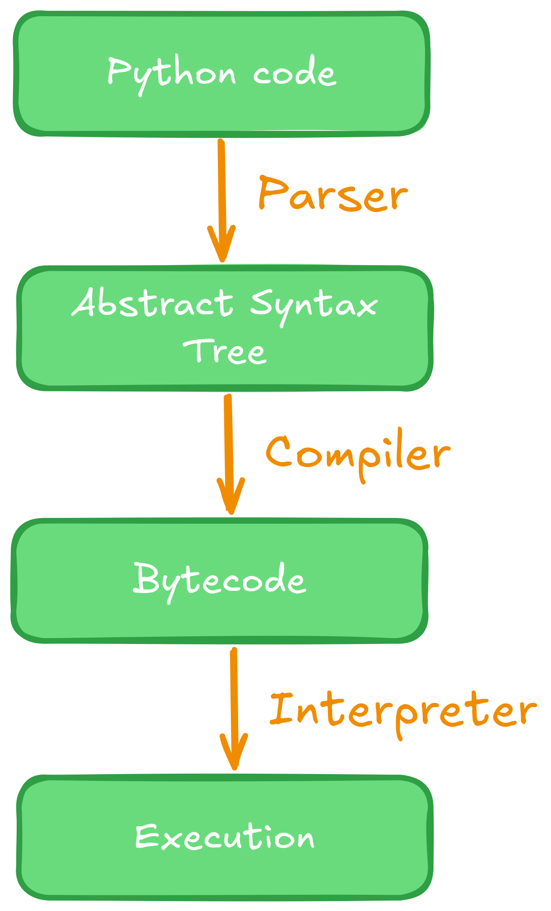
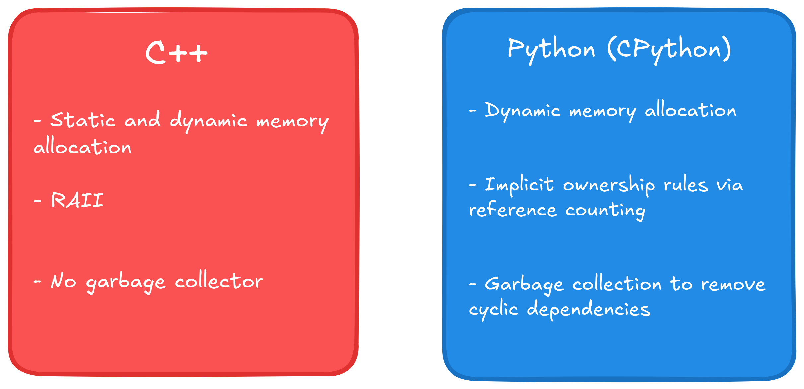

Published: Jan. 2026 - Updated: March 2026
In this article we explore how to call Python scripts from within C++ code, and how to send arguments and receive arguments back to C++. I have used this technique for some algorithmic implementations when I coded up the active learning library for the Flexfringe-tool.
In that implementation (currently found through source/active_learning) I once coded up algorithms to infer surrogate automata from neural networks. The flexfringe tool was written in C++, however, writing a good and flexible inference framework for the neural networks including all the data management seemed intimidating, especially given how assumptions about how data is being dished out changes quickly from dataset to dataset.
For applications like data science and machine learning Python simply remains king due to its flexibility and its ability to write relatively complex code with a few lines of code. Thus I decided to give my application some generic C++ interfaces, and leave the brunt of the neural network and data management in Python scripts. This way one only has to know which C++ to use, and then adapt the Python script's input and output to the C++ interface.
In this article you will learn how I did this, and therefore also a bit about CPython. You will also hopefully learn a technique to make your life easier or build better systems. So let's dive in.


I will give a small primer on CPython that will be enough to understand all the contents of this article. For more information I refer to the official documentation.
But what is CPython? We already know that Python is an interpreter language. That means that unlike e.g. a C++ program a Python-script does not need to get compiled first to be run on a machine. Instead, it will be translated into platform agnostic bytecode, and that bytecode will be executed by a piece of software called the Python interpreter. The Python interpreter is usually implemented in C using its own library. We call this standard implementation of Python CPython. For the interested reader I have outlined the Python execution path below.
The rough execution flow when running a Python script is outlined in the figure below. At first a parser runs over the Python script. It tokenizes the script and generates an abstract syntax tree (AST), that serves the compiler as input. The compiler translates the AST into bytecode, something that looks similar to assembly code, and caches the bytecode into .pyc files for a faster warmup next time the script is executed again. Lastly, the Python interpreter reads in the bytecode and executes it.

The basis for any object in CPython is the PyObject. We get access to this datatype by first
including Python.h. To do so we have to tell the preprocessor where to find the Python includes.
In CMake this is done via find_package(PythonLibs REQUIRED), and a subsequent
include_directories(${PYTHON_INCLUDE_DIRS}). I note that I had trouble with this
on a new Apple-native-CPU MacBook, I refer to the CMake of Flexfringe in case that this is
what you are using. The CPython documentation further recommends us to copy-paste the line
#define PY_SSIZE_T_CLEAN before including the Python header.
Once we have access to the Python headers we first have to run Py_Initialize();.
This line of code simply starts the Python interpreter, so we can issue
our first commands to the interpreter via PyRun_SimpleString();. I used this
command to first import the os- and sys-modules in Python, so that I could manipulate the
syspath of the interpreter to make sure it actually finds and can include my Python script
that I want to read from and write to. In my implementation this looked like the following:
// init
Py_Initialize();
PyRun_SimpleString("import sys");
PyRun_SimpleString("import os");
// manipulate syspath
stringstream cmd;
cmd << "sys.path.append( os.path.join(os.getcwd(), \"";
cmd << PYTHON_SCRIPT_PATH;
cmd << "\") )\n";
// can be done smoother with pathlib now (https://docs.python.org/3/library/pathlib.html)
cmd << "sys.path.append( os.path.join(os.getcwd(), \"source/active_learning/system_under_learning/neural_network_suls/python/util\") )";
PyRun_SimpleString(cmd.str().c_str());
We can now import the Python module and gain access to it, but first we need to understand how ownership and error handling work in CPython.
To understand the ownership rules we first have to have a look at the PyObject-type. In the
official source code of CPython we find the typedef
typedef struct _object PyObject;. Investigating the
_object struct we find the following two properties:
Py_ssize_t ob_refcnt; // could also have a different data type depending on flagsPyTypeObject *ob_type;
The rules for reference counts can also be neatly found in the
CPython documentation. Interesting for us is the rule to "never declare an
automatic or static variable of type PyObject", because all PyObjects are allocated on the heap.
For us this means that we should always call a native CPython function when creating a
CPython-object. Apart from that we want to point our attention towards the two macros
Py_INCREF(PyObject* p) and Py_DECREF(PyObject* p). Here, Py_INCREF()
simply increases the reference count for the given object by one. Py_DECREF() decreases
the reference count by one, checks if it reached zero, and calls the deallocator function
of the object if necessary, the CPython equivalent of a destructor in C++. For instance,
the deallocator of a Python list makes sure that objects that it holds get processed when the
list goes out of scope.
Destruction of CPython objects works just as you'd expect then: Objects whose a reference count reaches zero are removed. Users who encountered cyclic owership used std::shared_ptr will recognize a problem here, which is solved by the garbage collector. It's job is to detect cycles and clean up objects participating in in such when they are to be destroyed. C++ returns the responsibility of cleaning up cyclic ownership to the programmer via a std::weak_ptr.
Because of the above we can say that the reference count is a proxy for ownership to an object. A
caller receiving an object increases its count by one, and once it relinquishes ownership it
decreases the count by one again. Pitfalls arise when functions 'steal' references. A notable
example mentioned in the documentation are PyList_SetItem() and
PyTuple_SetItem(). These two populate a list or tuple in Python with objects,
assuming that ownership is handed from the caller to the list or tuple respectively. On the
contrary, PyList_GetItem() does not pass ownership to the caller, while
PySequence_GetItem() does. It is therefore important to read the documentation
of the function whenever in doubt, or risk segfaults or memory-leaks.
Error handling is much simpler to understand than reference counting: Exception-states are
stored on a per-thread basis, and the occurence of an exception can be checked via
PyErr_Occurred(). Additionally, typically functions of the CPython-API will
have a return value. Usually, the return value can be checked on NULL,
which typically indicates that an error occured.

Now that we understand memory-management and error handling, we can load our Python code
into our C++ program. To do so, first we need to load the Python module. We first translate
our std::string PYTHON_MODULE_NAME; // the full path into a PyObject via
PyObject* p_name = PyUnicode_FromString(PYTHON_MODULE_NAME.c_str());.
We want to perform error checking: if (p_name == NULL){//handle error}.
We then import the module via PyObject* p_module = PyImport_Import(p_name);,
and we do error checking again. Next we want to get a function pointer for our
Python function. We assume the following function (a function that actually exists
in our code, and that we use to query the output of neural networks):
def do_query(x: list):
# do something
return some_list_of_ints
We can load this function as a function pointer via PyObject* query_func =
PyObject_GetAttrString(p_module, "do_query");. This time we also want to
make sure that we actually do have a function, therefore we do an extra check. For brevity
purposes here is an example for the full error handling of this call (obviously there
is some boilerplate in CPython):
query_func = PyObject_GetAttrString(p_module, "do_query");
if (query_func == NULL || !PyCallable_Check(query_func)) {
Py_DECREF(p_name);
Py_DECREF(p_module);
cerr << "Problem in loading the query function. Terminating program." << endl;
exit(1);
}
Lastly we want to call the Python script and translate its return value back into a C++
native array in the form of an std::vector<int>. Assume we have a
C++ list vector<int> cpp_list;, and we want to send it. Firstly
we need to create a new Python list:
PyObject* p_list = PyList_New(cpp_list.size()). We then have to use
PyList_SET_ITEM() to populate the newly allocated Python-list, where we
first need to thoroughly translate each value of our C++ list into a PyObject via
PyLong_FromLong().
Once that it done we can call our function via
PyObject_CallOneArg() and get the argument back as a PyObject-pointer,
as per usual. The CPython-API provides multiple functions for calling Python methods,
out of which the one with the most fitting signature should be used. For us, since we had only one
argument, this one was the best. A list of all the possible function calls can be found on
the documentation.
Once we received our result we want to do some error checking, and subsequently translate it back to our C++ vector format. We also have to remember to free the space occupied by our code holding the newly created Python objects that we used as calling arguments, and whose ownership was transferred to us from the Python script. The code snippet below exemplary shows how all this is done. For brevity purposes we omit the error checking when translating our vector to a Python list and back.
// step 1: Prepare the input
PyObject* p_list = PyList_New(cpp_list.size());
for(int i=0; i<cpp_list.size(); i++){
PyObject p_int = PyLong_FromLong(cpp_list[i]);
// some error checking here
PyList_SET_ITEM(p_list, i, p_int); // this function does no error checking
}
// step 2: call function and check for errors
PyObject* p_result = PyObject_CallOneArg(query_func, p_list);
if (p_result == NULL || !PyList_Check(p_result)){ // PyList_Check() to see if we got expected return type
PyErr_Print();
// do error handling
}
// step 3: translate back to C++ data
// more on the size can be found here: https://docs.python.org/3/c-api/intro.html#c.Py_ssize_t
size_t p_result_size = static_cast<size_t>(PyList_GET_SIZE(p_result));
std::vector<int> res(p_result_size);
for(int i=0; i<query_traces.size(); i++){
PyObject* p_type = PyList_GET_ITEM(p_result, i);
// you can check the output p_type here for additional code safety
res[i] = PyLong_AsLong(p_type); // we expect int-values from Python
}
// step 4: free up space to avoid memory leaks
Py_DECREF(p_list);
Py_DECREF(p_result);
While the above works well in most of the cases it omits one critical use case: What if multiple threads want to access the Python interpreter at the same time? The answer is that in general the Python interpreter is not thread safe. For instance, when accessing the same recourses and there is a write operation involved, race conditions can occur. Race conditions can also occur on ownership itself, leading to false reference counts, hecne memory leaks or segfaults.
The solution Python proposes is the Global Interpreter Lock (GIL). In our example, when calling the script, holding the GIL would look like this:
// acquire GIL, blocking for other threads
PyGILState_STATE gstate = PyGILState_Ensure();
PyObject* p_result = PyObject_CallOneArg(func, args);
PyGILState_Release(gstate); // release GIL
// process results...
Py_DECREF(p_result);
The experienced programmer will immediately see two caveats in this design: Firstly, we process the result after releasing the lock. This design assumes that the calling thread is the owner of result now. In our example in the beginning result is a return value of a function call, therefore it this design is safe. But in case the Python script or some other instance holds a reference to exactly the same object we incur race conditions, therefore need to process the result before releasing the lock.
Secondly, the multithreading runs only in the C++ code we're using, but only one thread per time is allowed
to access the interpreter. This means that true parallelism is not possible on the Python side with this
design. And while one process can
hold multiple Python interpreters, they share the same GIL as of
Python 3.12. According to the documentation, the functions PyGILState_Ensure() and
PyGILState_Release() do not work well when multiple interpreters exist within the
same process, meaning that true parallelism can only be reached via actual multiprocessing.
To solve the problem above, PyGILState_Ensure() and PyGILState_Release()
were move to the Legacy API in the newest Python release as of today,
Python 3.14.3,
and newer functions have been introduced to solve the conundrum. I will leave it up to the
reader to get familiar with them if needed, at this point it is sufficient to know that updates exist to
solve the problem of parallelism.
That concludes our brief tutorial. We touched upon various topics and aspects of safely calling Python code from within C++, such as compilation, memory management, error handling, initialization and the CPython calling API, and multithreading. This enables us to play out the strengths of both languages. For a thorough example of how I used this technique I refer to this project. For feedback or questions please do not hesitate to contact me, e.g. via LinkedIn.